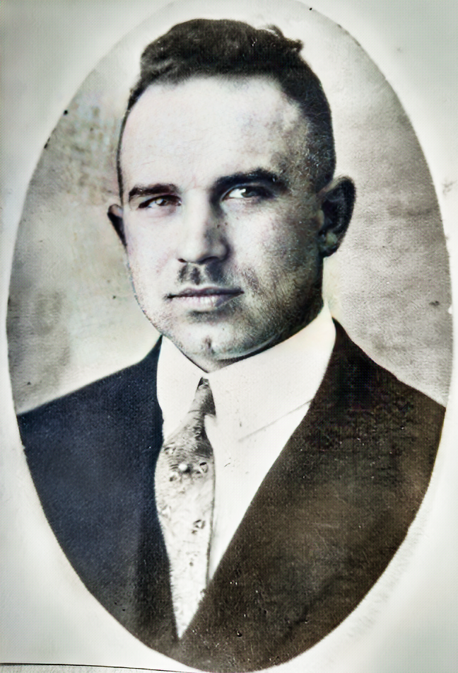
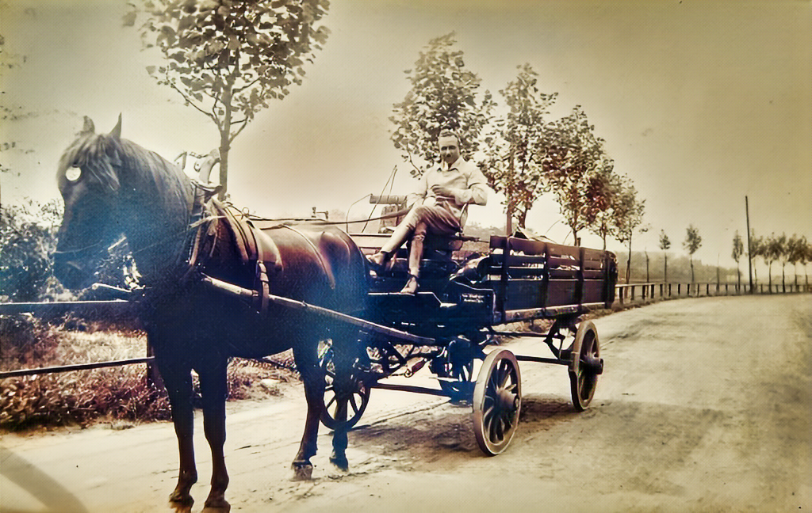
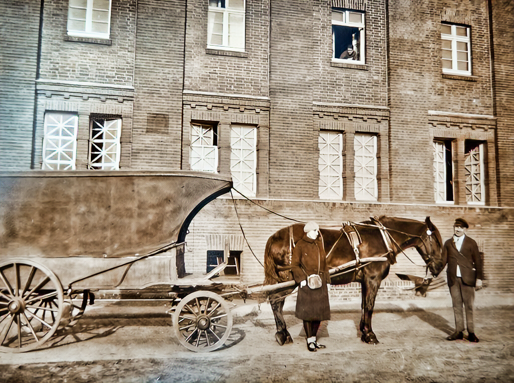
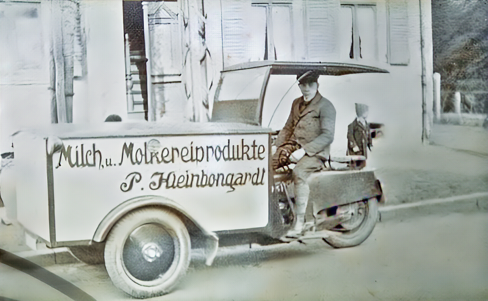
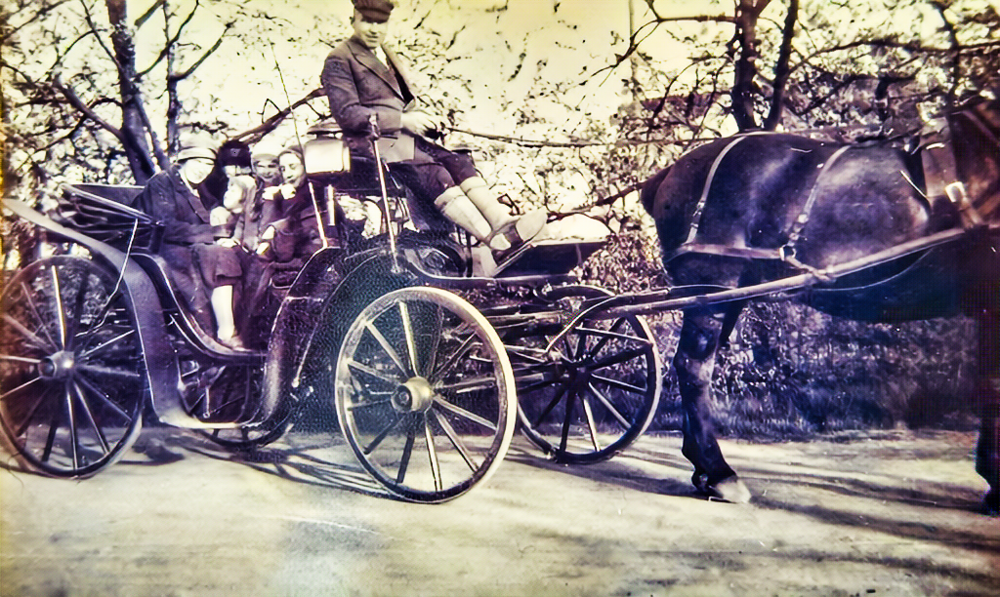
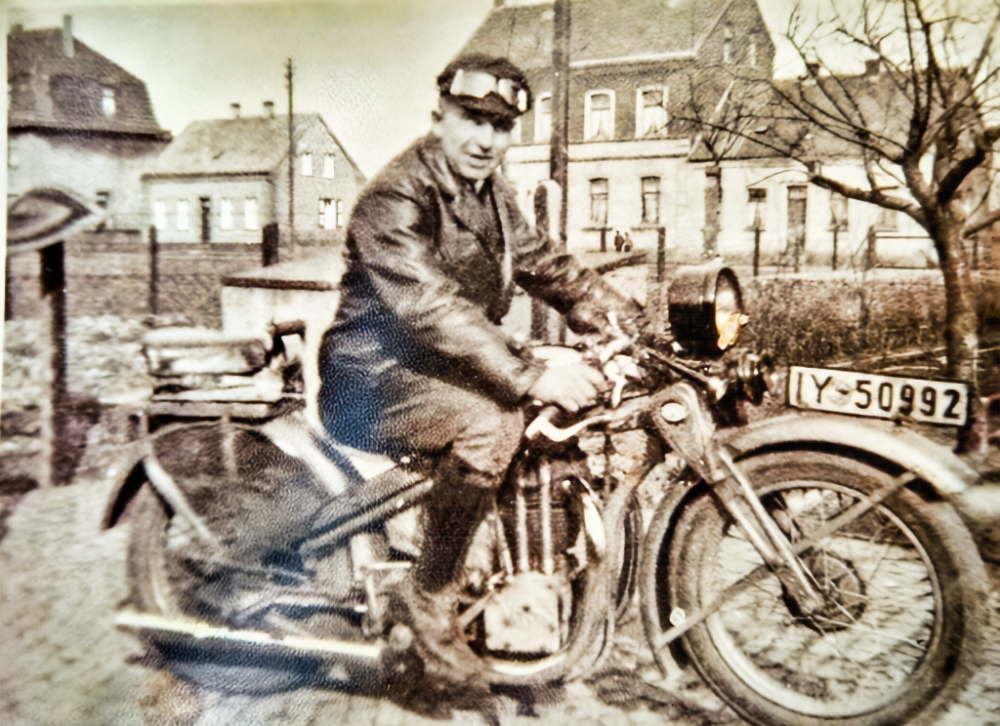

Opa Karl
Und nun schreibe ich die Erinnerungen meines Vaters auch wörtlich ab. Sie sind aus einer ganz anderen Sicht wie die von Oma Hamborn.
4.1.1979

Es ist mir nicht leicht, heute nach 75 Jahren meines Lebens das neue Jahr alleine zu beginnen.Vie11eicht wird mal jemand nach mir, diese Zeilen lesen. Darum will ich nicht gleich klagen über mein inneres und äußeres Befinden, denn es wird immer nur der verstehen, der gleiches Leid erleben musste.Obwohl es ja zig Millionen Sind, die es durchleiden mussten, glaube ich nicht, dass alle so darunter leiden wie ich. Habe ich doch so manchem im gleichen Fall gesagt: Der Herr wird's heilen, Oder “Wie der Tag, so die Nacht”. Darum soll das Klagen nicht an erster Stelle stehen, sondern: Sag Gott Dank für alles, für Alles?. ich muß sehr darüber nachdenken, was es heißt und wie viel es ist in 75 Jahren. Das größte aber, und im nachhinein nicht zu verstehen, dass meine Lebensgefährtin vor 7 Monaten von mir genommen wurde. Heute bin ich schon dankbar, dass mir nicht bei Jedem Gespräch über meine immer so liebe Frau und eure Mutter die Tränen kommen und ich die Sprache verliere (ist mein Stolz?)
Wenn ich darüber nachdenke, jetzt, da es draußen bitterkalt ist, ich wegen der Bronchitis drin bleiben muß, was unsere Mutter allein, mit unseren Töchtern in den Jahren von 1940 an, wo ich dann schon Soldat werden musste, durchstehen musste, still und ohne Murren, mit großem Herzeleid, aber ebenso großen Gottvertrauen, muss ich sie nur immer wieder bewundern.
Wenn ich ernstlich darüber nachdenke und wann tut man das schon, jetzt, da ich sie habe hergeben müssen, warum erst jetzt, wo nichts mehr zu ändern ist? Ich habe manchem, der mit sein Beileid aussprach, sagen müssen, sagen sie Ihrer öfter ein Dankeschön, drücken sie ihr öfter die Hand, gleich wofür, Sind doch so viele Dinge in der Ehe, die wir Männer so selbstverständlich hinnehmen, ein Dankeschön fällt uns oft so schwer, erscheint uns lachhaft und dumm, Oder wir vergessen es einfach. Jetzt, wo es zu spät ist kommen die Selbstvorwürfe und die Sind bitter. Ich will nun versuchen, ein wenig die Zeit zu schildern 1940 — 1945. War ich doch fern vom Tagesgeschehen und Kampf der Frauen und Mütter in der Heimat. Das erste Jahr in Gent (Belgien) war, wie wir Kameraden oft sagten, ein schöner Krieg. Unsere Generation hatte noch nichts von der Welt gesehen. Ich selbst war Fahrer des Kompaniechefs, der öffnete uns die Augen fÜr die Schönheiten der Denkmäler und allen Bauten. Er kannte jeden Baustil, wusste die Dinge zu erklären und machte uns auf alle Schönheiten, besonders in Kirchen, aufmerksam. Bilder, Altäre, Grabsteine, Grabinschriften, Stickereien und Brüsseler Spitzen, auf jedem Gebiet konnte er unterrichten. Die Schreibweise (plattdeutsch) bezeichneten die früheren Handelsstraßen, angefangen Antwerpen, Rotterdam, Lübeck, Bremen, Hamburg, Ostpreußen, Marienburg, Danzig, Riga, Narwa, das alles durfte ich sehen. Ich kann es mir fast nicht mehr vorstellen, all das Schöne und Große zu erleben, ich ein Volksschüler, der mit 13 Jahren entlassen wurde, weil der Vater von 19114 — 1918 Soldat war. Da es keine Unterstützung gab,hat meine Mutter das Milchgeschäft weiter geführt und ich musste dabei helfen. Aus diesem Helfen wurde dann Pflicht und ich bin 45 Jahre nicht mehr von der "Milchstraße" herunter gekommen. 0b es sich Lohnt , aus meinem Leben zu berichten, weiß ich nicht. Kleine unscheinbare Dinge, die aber damals mir groß und wichtig waren, möchte ich schreiben. Von meiner Konfirmation möchte ich zuerst schreiben, sie fiel noch in die Kriegszeit (1. Weltkrieg). Der Weg nach Aldenrade war weit, da wir in Bruckhausen und Marxloh unseren Verkaufsbezirk hatten. Etwa eine Stunde musste ich rechnen. Mutter sagte mir, wenn es Zeit war, zu gehen, Ich gab ihr dann das Wechselgeld und machte mich auf den Weg. Einmal fragte sie mich, ob ich nicht mehr in Tasche oder Strümpfe habe. Ich war darüber so erschüttert, dass mir die Tränen kamen. Wie konnte Mutter so etwas von mir denken? Sie muss damals wohl schon gewußt haben, wie man oft sagt, im Geld steckt der Teufel. Ich staune nur darüber, dass ich von diesem Teufel in meinem ganzen Leben nicht besessen war. Hatte ich doch immer Geld in der Tasche und oft nicht wenig. Mir ist nie der Gedanke gekommen, es unnötig oder leichtsinnig auszugeben. Heute kommt mir schon mal der Gedanke, war ich dumm, dass ich mir nicht mehr Freude (Oder auch Leid) mit dem Geld gemacht habe. Bin aber von Herzen dankbar, dass nicht das Geld mich hatte, sondern ich das Geld. Der Tag meiner Konfirmation verlief wie jeder andere. Ich hatte einen gewendeten Anzug, also piekfein und dann ging ich los. Natürlich allein, das fiel ja welter nicht auf, waren ja fast alle Väter im Krieg. Eines ist mir aber in der Erinnerung haften geblieben. Nach der Einsegnung war gleich das Abendmahl. Ich wusste, daB es eine heilige Handlung war, kannte ich doch die Worte: “Wer unwürdig isst und trinkt, isst und trinkt sich selbst zum Gericht.” Wie es nun kam, weiß ich heute noch nicht. Ich verließ als einziger Konfirmand die Kirche und ging still nach Hause. Ich hielt mich in der kurzen und sehr knappen Freizeit bei unseren Nachbarn Bauer Beekamm auf. So auch am Nachmittag meiner Konfirmation. Zu feiern gabs ja nichts. Der Tag verlief wie jeder andere. Mit den 2 Söhnen von Beekmann, die in meinem Alter waren, rauchte ich gerne, entweder aus Öhm Beekmanns Tabakbeutel etwas genommen, oder mal von zu Hause ein paar Groschen geklaut und dann Marke Eckstein, schmeckte besser, als die gedrehten Aus Tütenpapier. Am Nachmittag saßen wir auf der Treppe und pafften nach Herzenslust, da kam Anna, eine der Töchter um die Ecke und dann gings los: “Heute morgen den Heiligen Schwur getan und nun sowas”, störte uns wenig, es wurde weiter gepafft. Es war zu schön.
Und nun zu unserem Milchgeschäft. Die Milch wurde am Güterbahnhof verteilt, gegen 6 Uhr morgens gings los. Da es keine richtige Kontrolle der einzelnen Haushalte gab, wurde die Milch durch Polizei verteilt. Mal bis 500 Oder 8OO Liter, oft auch 100 Liter. Es kam vor, dass gar kein Güterzug ankam, dann fuhren wir mit Pferd und Wagen bis Bocholt am Niederrhein und holten die Milch von den Molkereien ab. Bei der Verteilung am Bahnhof quälten sich die Frauen mit ihren Karren und den schweren Kannen ab, Männer waren ja nicht da, auch da gab es schon viel Gelegenheit, anderen und schwächeren zu helfen. Wo wir die Milch verteilten, regelten wir selbst, so dass einigermaßen gerecht verteilt wurde. Wir schellten oder ich hatte auch eine Eisenbahnerflöte. Dann kamen die Mütter und warteten geduldig, ob für sie etwas übrigblieb. Ich habe bei mancher Mutter oder auch älteren Frauen, die mal wieder nichts mitbekommen hatten, manche versteckte Träne gesehen und konnte nichts ändern. So waren unsere Tage gut ausgefüllt. Wir hatten aber unsere kleinen Freuden, Viel Spass und Abwechslungen brachte August Röhrken (Freund) in unseren Alltag. Mussten wir wieder am Abend zum Rhein, wo auch ein Teil städtischer Kühe standen, um die Milch holen, dann war immer was los. August war einige Jahre älter als ich und arbeitete als Bäcker. Hatte natürlich schon kleine Liebschaften. Einmal hatte es Ihn gewaltig erwischt, er brannte lichterloh. Wie er erzählte, war es eine pechschwarze Frau, ein wildes Weib, aber auch dieses Feuer erlosch. Ich nahm seine Erzählungen immer sehr ernst. Später merkte ich dass es nur halb so schlimm war. Die Kriegsjahre gingen vorbei und unser Vater kam wieder zurück. Nun ging die Arbeit erst richtig los. Wir hatten durch alle Kriegsjahre hindurch, Pferd und Wagen erhalten. Das war damals eine Seltenheit, so war ein guter Start gegeben. Wir hatten einen ganz besonderen Wagen, er hatte eine große Ladefläche, weil die Vier Räder unter dem Wagen herliefen, so konnte man aufladen, soviel das Pferd nur ziehen konnte. Weil die Milchverteilung bis mittags abgeschlossen war, unternahm ich am Nachmittag für Lebensmittelhändler oder Baugeschäfte Fuhren aller Art. Manchmal auch Umzüge. Einmal war es sogar ein Klavier, aber nie wieder. Eine Fahrt vergesse ich nicht. Ein Nachbar hatte in Beekerwerth einen Acker, auf dem er 20 Ztr. Kartoffeln geerntet hatte. Die konnten ja nicht über Nacht draußen liegen bleiben. So bat er uns dieselben zu holen. Natürlich wurde das gemacht, der Verdienst war nicht gewaltig, aber wenn es nicht regnete, dann dröppelt es wenigstens. Gegen 6 Uhr fuhr ich los und war nachts um 12 Uhr wieder zu Hause. Das ist mir wohl sehr schwer geworden, sonst hätte ich es ja Längst vergessen. Unser Arbeitstag begann morgens um 5.30 Uhr. Bevor ich zur Milchverteilung kam, so gegen 7 Uhr, hatte ich schon 2 Fuhren von der Molkerei zum Güterbahnhof gemacht. In der Molkerei wurde Flaschenmilch, Butter Quark Usw. Hergestellt, um am Güterbahnhof an die Milchhändler auszugeben. Über eine kurze Zeit wurde eine Flaschenmilch hergestellt, extra für Säuglinge. Sie war in Metallflaschen gefüllt, wog 3 Pfund, also viel zu schwer und hygienisch nicht einwandfrei. Danach kamen dann schon Glasflaschen, mit denen wir auch viel Ärger hatten. Also blieben wir der Handkanne treu. Vollgezapft wurde sie uns aus einem 120 Liter Fass. Oft haben uns Kinder den Kran aufgedreht, dann floss die Milch in den Rinnstein. Wir brachten den Kunden die Milch bis in die Küchen auf den Tisch. Vaters große Leidenschaft war das "Bauen". Schuppen und Schüppkes, Hühnerhof und Schweinestall, dazu konnte er alles gebrauchen. Krumme Nägel wurden gerade gekloppt. Wie viele habe ich stickum verschwinden lassen. Teeren und kälken gehörte auch zu meiner Beschäftigung. Befriedigte mich aber nicht. Gern hätte ich irgendeine Lehre durchgemacht. Vater wollte nichts davon wissen. Da Gehorsam oberstes Gebot war, änderte sich also nichts. Eine Begebenheit fällt mir da ein. Ein Onkel aus Meidrich kannte eine Stelle in Oberhausen, da konnte man leere Kisten kaufen. Vater fuhr mit dem Fahrrad hin und da es für gut befunden wurde, musste ich mit Pferd und Wagen hin. Vaters Herz schlug höher, es wurde nicht stückweise bezahlt, sondern die ganze Fuhre abgeschätzt. Da wurde also gestapelt, große und kleine Kisten ineinander und aufeinander gestapelt und alles zusammen dann noch sehr billig. Es war auch alles zu gebrauchen.
Ein Freund von mir, der damals arbeitslos war, gelernter Schreiner arbeite bei uns 2 Jahre lang, bekam 50 Pfennig Arbeitslohn, später 1,00 DM Jedenfalls, die Kisten wurden alle verarbeitet. Da bei uns immer gearbeitet wurde, ist ja auch wohl verdient worden. Der große Finanzbearbeiter und Verwalter war unsere Mutter. Ich selbst kümmerte mich ums Geldverdienen gar nicht. 1922 - 24 war die Inflation, aber gearbeitet wurde trotzdem, ob es für viel oder wenig Geld war. Zum Ende der Inflation ging es ja um Billionen, was waren wir reich geworden. Übrig blieb nachher ein paar Goldmark. Die mussten ja angelegt werden. Das Wohnhaus war geräumig genug, die Stallungen auch, also musste Land gekauft werden, damit wieder gebaut werden konnte. Das Land an der Fahrnerstraße wollte Vater als Garten behalten, hatten wir dadurch einen Blick die ganze Straße entlang. Aber wer verkaufte da schon Land. Zwei Bauernhöfe waren noch in Fahrn, Beekmann und Scholten. Da es in der Wirtschaft bergauf ging und die Industrie ausdehnte, verkauften die Bauern ihre Felder für gutes Geld und behielten als Eigentum ihre Häuser und Gartenland. Die Felder pachteten sie und fühlten sich trotzdem als Herren vom Ganzen. Es hatte sich nichts geändert, nur etwas mehr bares Geld hatte man in Händen. Sie fuhren auch bald nur noch mit Kutschen durch Fahrn. Da ich ja noch öfter zu Beekmann ging, sollte ich mal leise anfragen, ob nicht ein Streifen an der Karlstraße, später Frundsbergstraße, (heute Karl-Wilhelm Steffs Haus) zu kaufen sei. Nach vielem Hin und Her war es dann so weit. Es war fast ein Wucherpreis, aber wenn Vater etwas vorhatte, fragte er nicht nach Geld. So war es auch, wenn er Pferde kaufte. In Dinslaken wohnte ein Herr "Jud Boven”, der hat auch manches Geld bei uns verdient. Mit zunehmendem Alter wurden ja auch Wünsche wach, bei mir ging es um ein Motorrad. Ein Bekannter aus der Schupo-Kaserne (Polizeikaserne) verkaufte seine Maschine, es war eine NSU 500, sollte 850,— RM kosten. Mutter winkte ab. Ich weiß es noch wie heute. Beide saßen in ihrer Laube. Mutter blieb beim Nein und Vater sagte, gib dem Jung doch das Geld, er hat es ja verdient, bei all seiner Arbeit. Nun war die Maschine da und ich hatte wenig Zeit zu fahren.
    
Inzwischen war mein jüngerer Bruder Willi auch so weit, ob mit oder ohne Erlaubnis zum Fahren, auf Jeden Fall gab es manchen Ärger. Später wurde ein Auto gekauft. Da hieß es bei Vater, einmal fahren, zweimal putzen. In diese Jahre fiel die arbeitsreichste Zeit meines Lebens. Über 5 Jahre blieben nur selten mehr als sechs Stunden Schlaf. Wie schön, jung und gesund zu sein, dazu ein Ziel vor Augen zu haben. Ich war im heiratsfähigen Alter. Es konnte wieder gebaut werden, Land war ja vorhanden. Verlobt war ich schon, also stand der Sache nichts mehr im Wege.
Mit Eifer ging es ans Werk. Elsbeth ist noch auf der Fahrnerstraße geboren. Aber im Frühjahr 1928 war es dann so weit. Bruder Heinrich zog in die 1. Etage und Mutter und ich in Parterre. Es war eine sehr schöne Zeit. Die Arbeit erledigten wir nicht unter Zwang, sondern sie gehörte einfach zu unserem Alltag. Uns wurden Kinder geboren und es war immer ein fröhliches Treiben in Hof und Garten. Die Jahre vergingen, die Eltern wurden älter. Vater hatte etwas Mehr Zeit für sich und fuhr des öfteren mit seinem jüngsten Bruder Johann, der Eine Wochenendwohnung mit Fischerei in Millingen kreis Rees besaß. Durch die Kinder war es ja nicht ruhiger geworden und Ordnung halten wurde auch immer schwieriger.
Auf einmal wurde bei den Eltern der Wunsch laut, sich bald zurück zu ziehen. Wohin? Nach Millingen. Also musste wieder gebaut werden. Es war in Millingen Naturschutzgebiet und das Land gehörte dem Fürsten zu Anhalt. Weil Onkel Johann aber auch Nutzen davon hatte, wenn die Eltern dorthin zogen, hat er mit großem Eifer die Verhandlungen geführt und so wurde auch das möglich und bald in die Tat umgesetzt. 1938 zogen die Eltern dorthin und es war für uns alle, die wir dazu gehörten, immer eitel Freude und Sonnenschein, wenn es nach Millingen ging. Unsere Kinder und alle Neffen und Nichten erinnern sich gerne an Omas und Opas Millingen. Da es aber nun kein vollkommenes Glück auf Erden gibt, mussten wir bald erfahren. Im September 1939 brach der 2. Weltkrieg aus. Die, wir den 1. Weltkrieg noch nicht vergessen hatten, war es fast nicht zu fassen. Doch es blieb wahr. Auch ich musste 1940 schon Soldat werden. Verglichen mit den Jahren 1914 - 1918 war nun alles besser organisiert. Die Kriegerfrauen bekamen eine Unterstützung und der Soldat seinen Wehrsold. Wie ich anfangs schon erwähnte, waren die ersten Kriegsjahre zu ertragen. Als dann aber auch der Bombenkrieg einsetzte, war ja auch die Heimat sehr stark in Gefahr. So geschah es dann auch. In Russland erhielt ich das Telegramm - Bombenschaden - Heimaturlaub. - Das 2. Wort war schön, aber kein Zuhause mehr zu haben, war schrecklich. Und doch blieb mit so viel Grund zum Danken. Bei allem äußerlichen Verlust waren meine Lieben alle wohl erhalten gebliebene. Hermann Scholten vermittelte bei Verwandten Platz, in dem sie bis zum Ende des grausamen Krieges bleiben konnten. Ich musste wieder nach Russland, das war der schwerste Abschied während des ganzen Krieges Aber auch der Krieg nahm ein Ende und ich sammelte meine Lieben wieder ein. Eine ganz bescheidene Bleibe fanden wir bei Fehndrich auf der Mecklenburger Straße. Erwähnen möchte ich aber doch, dass meine Brüder gesund aus dem schrecklichen Krieg nach Hause gekommen sind. Mehr Leid musste meine Mutter tragen. Hatte Vater doch schon Anfang des Kriegs einen Gehirnschlag erlitten, von dem er sich nicht mehr richtig erholt hat, noch bis 1952 gelebt hat. Für mich hieß es ja nun 1945 ganz neu anzufangen und das mit ganz anderen Voraussetzungen. Da keiner mehr über Pferd und Wagen verfügte, konnte man sich eine Verkaufsstelle errichten und dann Milch verkaufen.
Ich fand einen geeigneten Raum. Da ja Lebensmittel sehr stark eingeschränkt wurden, Milch nur für Kinder und Säuglinge zugeteilt wurde, erfüllte sich der Traum meines Lebens. Einen Raum für Milch und Lebensmittel. Essen und Trinken geht im Leben immer weiter. So fing ich mutig wieder an, meine Lieben halfen ja schon mit. Bei Fehndrich wurde es bald zu eng und wir bekamen eine Wohnung auf einem alten Bauernhof in Marxloh. Der Verkauf im Geschäft verlief auch ohne mich gut. So konnte ich in Fahrn dafür sorgen, dass die Beschädigten Wohnungen in Ordnung gebracht wurden. Leider ging das nicht gegen Geld, sondern gegen Lebensmittel. Das war mir nicht immer recht, aber sonst wären
// HIER FEHLT NOCH WAS
Dann musste der Schutt von Wohnung und Stallungen abgetragen und fortgebracht werden. Dabei hat mir ein Herr Müller und Friedhelm tüchtig geholfen. Den Schutt durften wir noch am Sandberg, heute Krankenhaus, abladen. Bei aller Arbeit in Fahrn muss wohl in mir die Sehnsucht erwacht sein, mit der Familie auch wieder zurückzuziehen. Eine sehr kühne Idee. Zuerst entstand ein kleiner Verkaufsraum. Elsbeth war die erste Verkäuferin. Ihre erste Einnahme war 17.50 nicht gerade vielversprechend, aber wir waren ja alle so bescheiden geworden. Je mehr ich gefordert wurde, meine Einsatzbereitschaft wurde größer. So ging ich dann daran. aus den Stallungen für unsere Wohnung zu bauen. Mit viel Arbeit hatte ich ja gerechnet, zum Glück nicht mit all den Widerwärtigkeiten. Doch durch die Hilfsbereitschaft vieler Bekannte und Gottes Hilfe ist es gelungen. inzwischen hatte ich mir ein Pony mit Wagen von Beekmann gekauft. Das Pferdchen hieß Mucki, es war eins meiner liebsten Pferde. Eine alte Laube war sein Stall. Er fraß was eben nur zu fressen möglich war. Meistens waren es Brotreste aus der Bäckerei. Wenn ich am frühen Morgen mit meinen schweren Schuhen über den gepflasterten Hof kam, steckte er sein Köpfchen aus dem Fenster und wieherte mir entgegen. Ansonsten konnte er stur und nickelig sein.
Ganz stolz war ich, als ich ein neues Geschirr bekam. Ein Kollege äußerte sich: “Son großer Fuhrmann und son kleines Pferd.” Mit viel Arbeit waren unsere Tage ausgefüllt, aber alles hatte wieder einen Sinn bekommen. Die Kinder heirateten. Wir feierten unsere Silberhochzeit und dann konnten Mutter und ich mal zusammen in Urlaub fahren. Hochzeiten und Verlobungen waren immer schöne Familienfeste und als unser erstes Enkelkind geboren wurde, hatte unsere Freude keine Grenzen. Höhepunkte im Einerlei des älterwerdens war für eine Fahrt Als sie dann erleben durfte Uroma zu werden, war sie nach Oelde, wieder ganz glücklich. Das alles haben Mutter und ich ganz bewusst erlebt und Freude an Kindern und Enkelkindern gehabt. Doch Mutters Gesundheit ließ oft zu wünschen übrig. Daher entschlossen wir uns, das Geschäft zu vermieten und eine kleine richtige Altenwohnung zu beziehen, bei Steffs Es war eine große Umstellung für uns beide, waren wir doch immer große Wohnungen gewöhnt, aber es reichte.
Bei besonderen Anlässen stand uns bei Ruth immer das große Wohnzimmer zur Verfügung. Von manchen sind wir beneidet worden um die schöne Aussicht vom Fensterplatz her. Die Aussicht in den Garten mit all den blühenden Bäumen und Sträuchern ist uns immer eine Augenweide gewesen und waren doch im Ganzen gesehen recht dankbar, dass wir unseren Lebensabend so friedlich verbringen durften.
Dann kam aber Christels Tod, der hat besonders Mutters Herz gebrochen. Es zeigte sich immer mehr, dass das Leben kein Spaziergang ist. Wir durften auch noch unsere goldene Hochzeit feiern, zwar unter Tränen, aber wir waren noch zusammen. Wenn ich diese nun alles zu Papier gebracht habe, so möchte ich abschließend Euch allen ein Dankeschön sagen. Es war nicht immer leicht mit mir umzugehen. Aber es wird wohl nicht mehr lange sein.
Euer Vater.
Eine Anmerkung von mir:
Opa Karl hat noch drei Jahre gelebt und ist nicht so traurig von uns gegangen. Er kam noch nach Oelde, einmal sogar mit einer “Bekannten”. Zu unserer großen Sorge, ließ er es sich nehmen, allein mit seinem roten Auto uns noch oft zu besuchen.
Und nun beginne ich mit den Erinnerungen an meine Jugendzeit. Ich habe alles schon mal 1984 geschrieben und Euch ist es bekannt. Ich werde auch nichts ändern. Nur aus Gründen der "Leserlichkeit" beginne ich noch einmal. An der Zeit, die ich Euch beschreibe, hat sich ja nichts geändert. Nur mein Leben ist grundlegend anders geworden. Die Erinnerung an die letzten Jahre möchte ich auf keinen Fall schriftlich niederlegen. Vielleicht schafft das mal jemand von Euch.